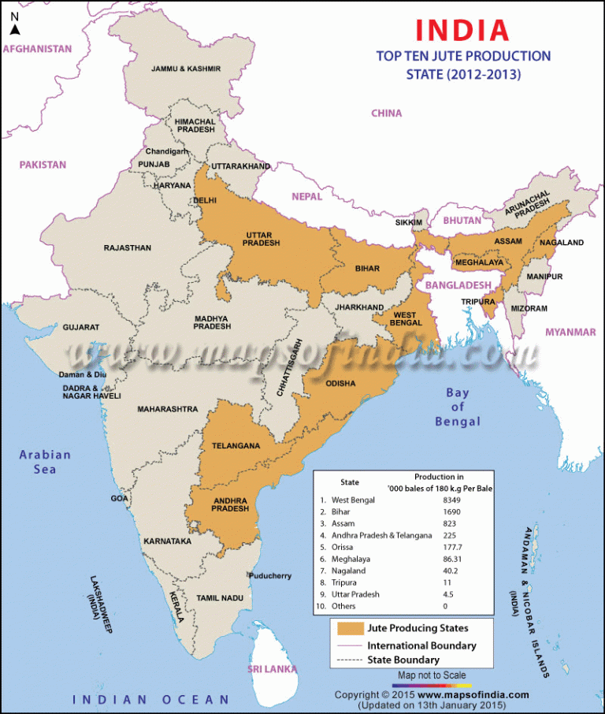

Jute is a tropical plant that requires hot and humid climate. It is one of the most important natural fibres in terms of cultivation and usage. Almost 85% of the world’s jute is cultivated in the Ganges Delta.
Type of Crop: Zaid Varieties: White Jute, Tossa Jute Temperature: 24-35 °C. Annual Rainfall: 125-200 cm. Soil Type: Sandy and Clay Loam Major Producers: West Bengal, Bihar, Assam, Andhra Pradesh, Orissa, Meghalaya, Nagaland, Tripura, Uttar Pradesh Largest Producer: West Bengal Highest per Hectare Yield: West Bengal Research Centres: Kolkata & Nilgunj, West Bengal Highest Producing Country: India (but highest exporter is Bangladesh)